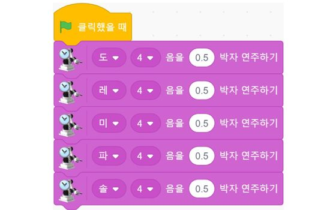
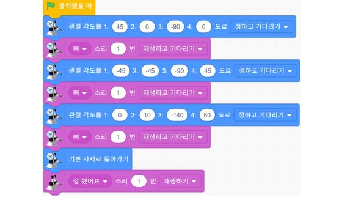
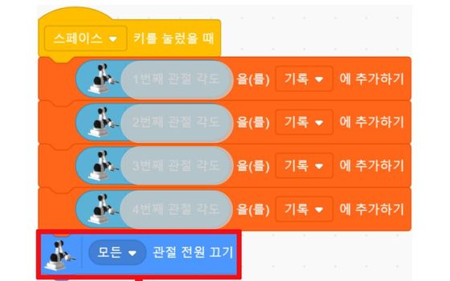
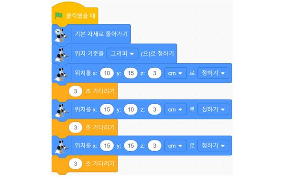
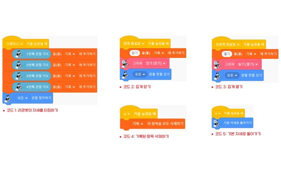
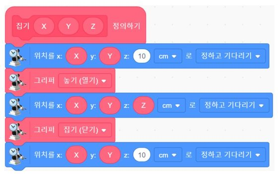
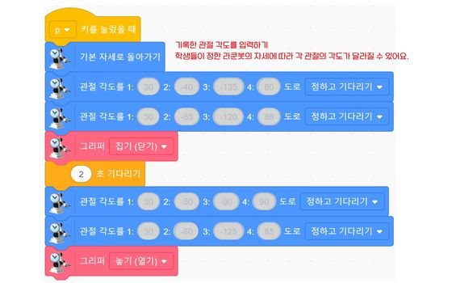
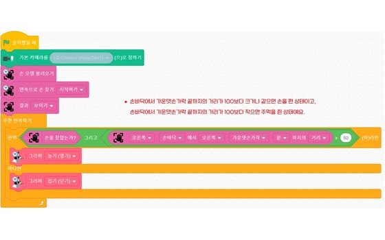

여는 법 · .sb3 내려받기 → 로봇 코딩(2.2.1)에서 스크래치 실행 → 파일 ▾ → 컴퓨터에서 가져오기
로봇 연결 · 동글을 USB에 꽂고 라쿤봇 전원 켜기 → 로봇 코딩에서 라쿤봇 연결 확인
3차시 · 연결하고, 각도와 코드로 자세 만들기

도레미파솔 소리 내기
깃발 아래 「음을 박자 연주하기」 5개를 도 · 레 · 미 · 파 · 솔로. 소리는 PC가 아니라 로봇에서 납니다

1번 관절을 속도로 돌리기
「1번째 관절 속도를 50 %로 정하기」 → 2초 → 기본 자세. 50을 −50, 100으로 바꿔 다시. 속도는 −100 ~ 100


제로 · 파크 · 홈 자세 만들기
관절 각도 블록 3개. 제로 0 · 0 · 0 · 0 / 파크 0 · 25 · −145 · −60 / 홈 0 · −10 · −140 · 60



네 관절을 한 번에, 내 자세 세 개
1:45 · 2:0 · 3:−90 · 4:0 한 번에 실행. 손으로 잡은 자세 셋을 「삐」로 잇고 기본 자세 → 「잘 했어요」

손 티칭을 코드로 · 스페이스로 자세 기록
변수 「번호」, 리스트 「기록」. 팔을 손으로 옮기고 스페이스 = 관절 각도 4개를 기록에 추가

4차시 · 좌표로 집어 옮기고, 세 방식 견주기

그리퍼 기준으로 가고 좌표표 만들기
깃발 = 세 지점 차례로. 기준을 손목으로 바꿔 비교하고 검사대 · A · B 좌표를 팀 좌표표에. 수평으로 가기 전에 z부터


① 손 티칭 · 기록한 자세로 원기둥 옮기기
팔 옮기고 스페이스 · ← 집기 · → 놓기. O로 기본 자세, P로 재생, 실패하면 C로 지우고 다시 기록

③ XYZ 좌표 · 「집기」 「놓기」 블록
나만의 블록 「집기」 「놓기」(입력값 X · Y · Z): 위로 → 내려가 잡고 → 다시 위로. 5차시 미션 ③(순서 카드대로)의 시작 코드

(선택) 그리퍼를 수평으로 고정하고 움직이기
깃발 → 팔이 움직이는 동안 그리퍼 보기. 관절 4 속도를 30으로 바꿔 다시. 고정하면 관절 4는 마음대로 안 됩니다


키보드로 조종 · 판단은 사람이
숫자 키(1~4) + W = 속도 40, + S = −40. ↑ 놓기(열기) · ↓ 집기(닫기). 원기둥을 A로 옮기고 시간 기록
5차시 · 연속동작 만들기

한 자리에서 집기 · 놓기 반복하기
c 키 → 손으로 그리퍼를 목표 지점에 → 관절 각도 4개 적기 → p 키. 코드에 각도를 넣고 실행, 수직 고정으로 바꿔 다시

(선택) 원기둥을 집었다 제자리에 놓기
활동지 C 구역에 원기둥. c 키로 위 · 집는 자세 각도를 적고 p 키로 실행. 위로 가서 내려가 집습니다


6차시 · 인공신경망 학습

(선택) 손을 펴면 놓고, 쥐면 집기
미리 학습된 손 찾기. 카메라 고르고 깃발 → 손을 펴면 집게가 열리고, 주먹을 쥐면 닫힙니다. 기준값 50을 바꿔 다시
8차시 · 학습 로봇 미션 및 나눔

(확장) 색깔 찾기로 같은 선별 미션
확장 기능 → 인공지능 → 색깔 찾기. 빨강 · 노랑은 A, 파랑 · 초록은 B. 우리 「불량」도 찾을 수 있는지 봅니다